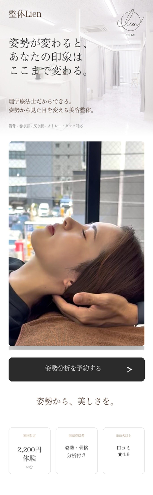
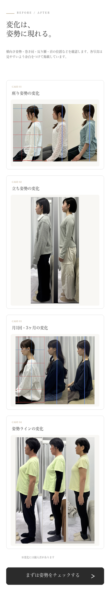
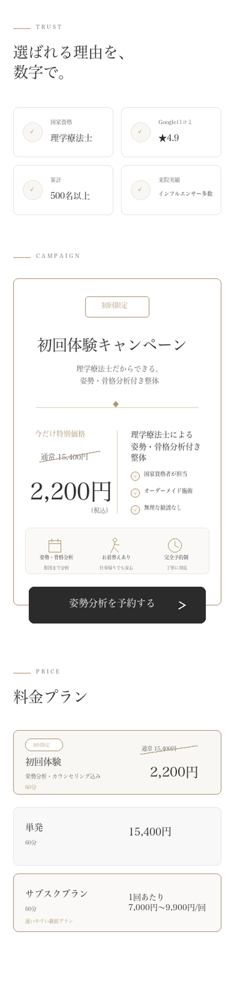
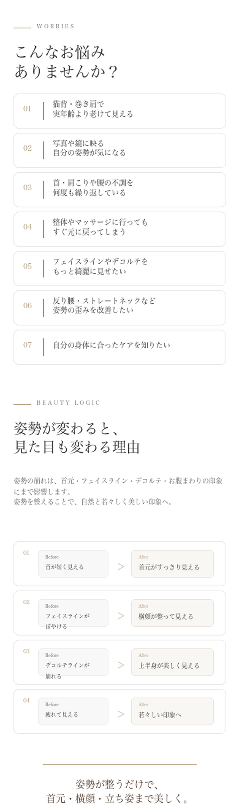
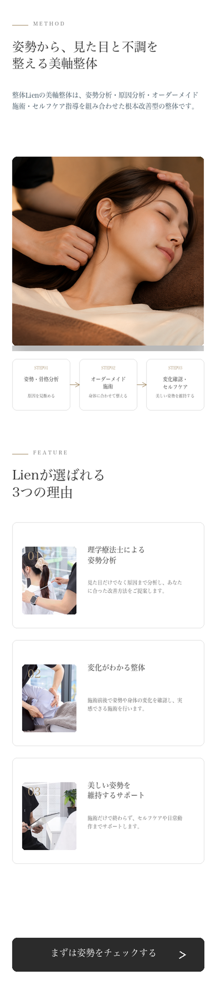
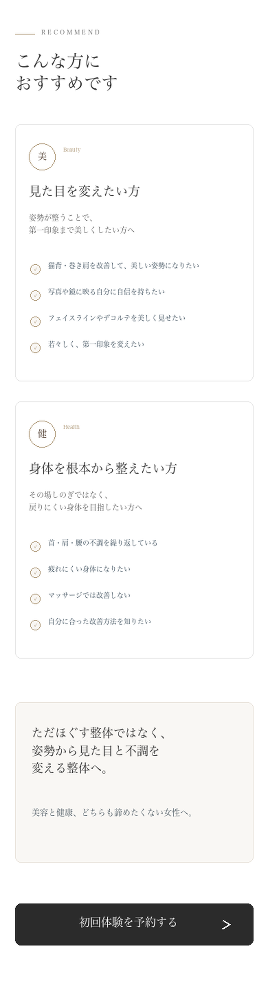
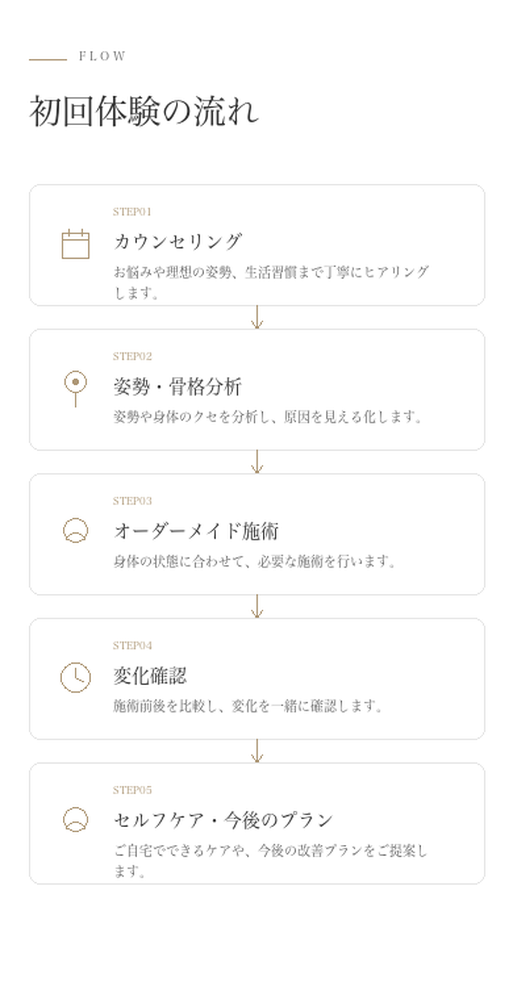
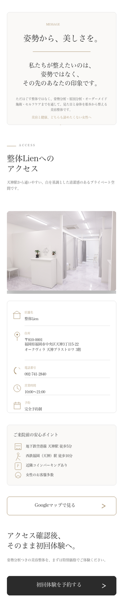

★★★★★
30代前半 女性
初回で決めるつもりはありませんでしたが、長年つらかった首肩まわりが一気にスッキリし、姿勢まで良くなって衝撃でした。
丁寧なヒアリングとホームケアまで教えていただけるので、安心して通えています。







VOICE
実際にご来店いただいたお客様から
嬉しいお声をいただいています。
30代前半 女性
初回で決めるつもりはありませんでしたが、長年つらかった首肩まわりが一気にスッキリし、姿勢まで良くなって衝撃でした。
丁寧なヒアリングとホームケアまで教えていただけるので、安心して通えています。
20代前半 女性
肩こりや姿勢の悪さが気になって来店しました。
身体の状態を細かく分析してくださり、自分では気づかなかった原因まで分かりました。
施術後は身体が軽くなり姿勢の変化も実感できました。
30代後半 女性
説明も分かりやすく、施術後すぐに首や肩の動きが変わって驚きました。
セルフケアまで丁寧に教えていただけるので安心して通えています。
40代 女性
長年悩んでいた肩や首のつらさがとても楽になりました。
毎回身体の状態を丁寧に説明してくださるので安心して通えています。
セルフケアも教えていただけるので家でも続けられています。
50代 女性
整体は初めてで不安もありましたが、身体の状態をしっかり見てから施術してくださるので安心でした。
施術後は姿勢も伸びたように感じ、身体がとても軽くなりました。
FAQ
初めての方にも安心して
ご来院いただけるよう、
よくいただくご質問をまとめました。
